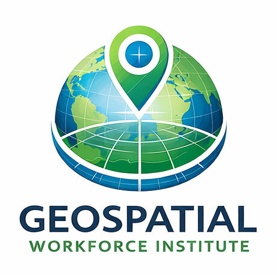

The Geospatial Workforce Institute was not created as just another course platform. It was built to solve a problem that has been hiding in plain sight.
Across the country, there is a growing disconnect between education and opportunity. Students are told to prepare for the future, but many never see the careers that are actually available to them. At the same time, industries that shape our world are quietly struggling to find the next generation of professionals.
Land surveying and geospatial technology sit at the center of that disconnect. These are careers tied directly to construction, infrastructure, land development, mapping, and the physical world around us. They are essential. They are in demand. And yet, most students never hear about them.
In many classrooms, students are working hard but without a clear connection to real-world outcomes. They complete assignments, pass tests, and move forward, but often without a strong understanding of where those efforts can lead.
Meanwhile, schools are expected to prepare students for careers, yet they are often limited by time, resources, and access to industry-aligned content.
The result is a gap. Students lack awareness. Schools lack scalable solutions. Industry lacks a pipeline.
The Geospatial Workforce Institute was built specifically to close that gap.
This institute takes a different approach to education. Instead of focusing only on content delivery, it focuses on connection — connecting students to real careers, connecting schools to workforce needs, and connecting learning to purpose.
The goal is not just to teach information, but to help students understand where they fit in the world and how their skills can translate into meaningful work.
Every structure, every road, every property boundary, and every development project begins with understanding the land.
Surveyors and geospatial professionals provide that understanding. They measure, interpret, and define the physical world so that everything else can be built on top of it.
These careers are not only essential — they are stable, meaningful, and increasingly important as infrastructure continues to grow and evolve.
The opportunity is real. The demand is real. The awareness is not.

This institute was built from years of classroom experience and a clear recognition of what students need but are not currently getting: direction, relevance, and a connection to real opportunity.
Too many students move through school without ever discovering careers that would fit them perfectly. At the same time, industries that depend on skilled professionals are left searching for people who were never shown the path.
The Geospatial Workforce Institute exists to change that — to make the invisible visible, to connect education with purpose, and to help students step into careers that matter.
The Geospatial Workforce Institute is a long-term vision to rebuild the connection between education and opportunity. It is a pathway for students, a solution for schools, and a bridge to the future workforce.
See How This Works for Schools